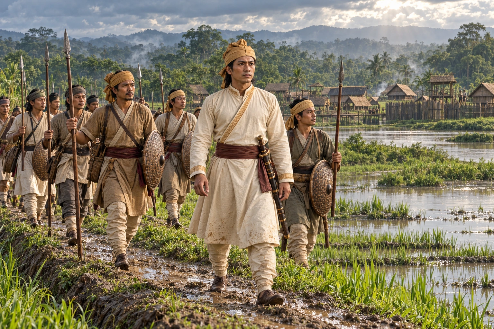

Nangchukham Borgohain Marches on Kamata
c. 1401–1407 · The coming of Sukaphaa

Tai Sulai flees to Kamata. Sudangphaa's commander Nangchukham Borgohain invades, and the Kamata king, also pressed by Bengal, makes peace and gives a daughter in marriage to Sudangphaa.
Chronology of the Kamata episode is undated and disputed.
People: Nangchukham Borgohain, Sudangphaa (Bamuni Konwar), Tai Sulai